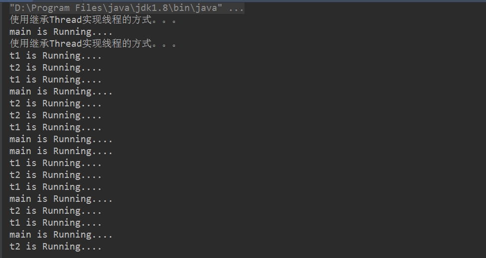
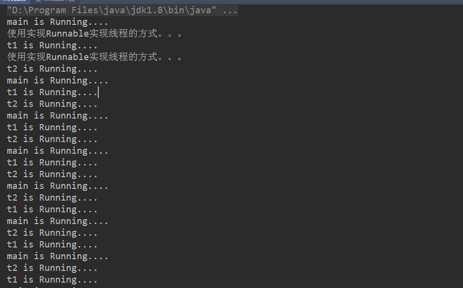
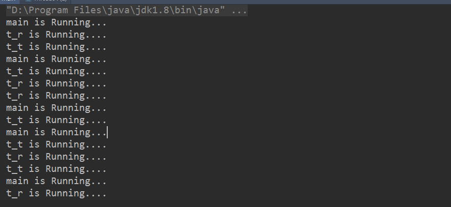
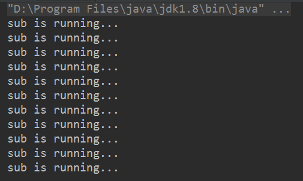
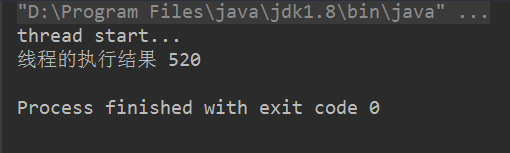
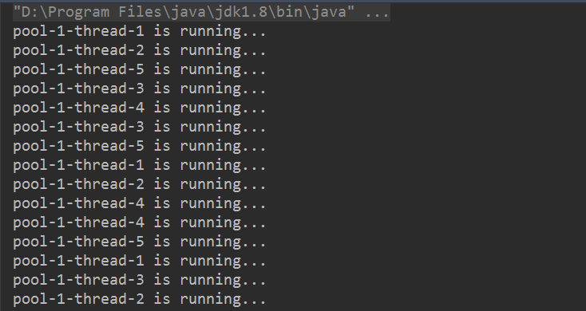
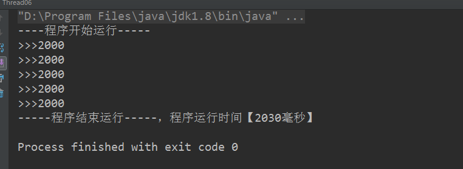
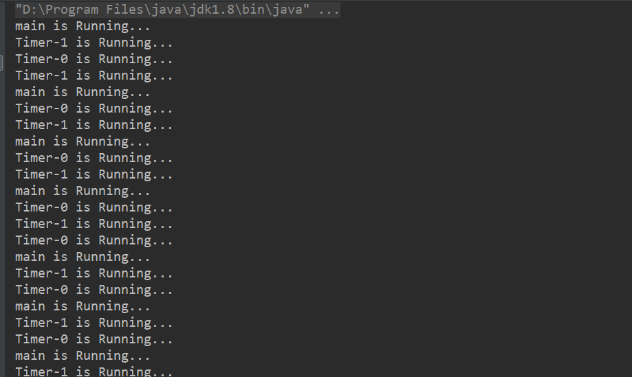

java实现多线程基本上有5种办法，第一继承Thread类，重写run方法；第二实现继承Runnable接口，重写run方法；第三种是基于内部类的写法，同样重写run方法，实际上和前2种本质一样；第四种，基于带返回值的线程实现方式；第五种，基于线程池的方式；第六种，基于定时任务实现的多线程。
1.基于继承Thread类的实现
/** * @Author: Cyy * @Description: 使用继承Thread实现线程的方式 * @Date:Created in 23:33 2018/7/27 */ public class Thread01 extends Thread { @Override public void run() { super.run(); System.out.println("使用继承Thread实现线程的方式。。。"); int i=0; while (true) { System.out.println(Thread.currentThread().getName()+" is Running...."); try { Thread.sleep(1000); } catch (InterruptedException e) { e.printStackTrace(); } } } public Thread01(String name){ super(name); } public static void main(String[] args) { Thread01 thread_1=new Thread01("t1"); Thread01 thread_2=new Thread01("t2"); thread_1.start(); thread_2.start(); while (true) { System.out.println(Thread.currentThread().getName()+" is Running...."); try { Thread.sleep(1000); } catch (InterruptedException e) { e.printStackTrace(); } } } }运行结果：

2.基于实现Runnable接口的实现
/** * @Author: Cyy * @Description:基于实现Runnable接口的实现 * @Date:Created in 23:46 2018/7/27 */ public class Thread02 implements Runnable { @Override public void run() { System.out.println("使用实现Runnable实现线程的方式。。。"); while(true){ System.out.println(Thread.currentThread().getName()+" is Running...."); try{ Thread.sleep(1000); }catch (InterruptedException e){ e.printStackTrace(); } } } public static void main(String[] args) { Thread02 thread01=new Thread02(); Thread02 thread02=new Thread02(); Thread thread1=new Thread(thread01,"t1"); thread1.start(); Thread thread2=new Thread(thread02,"t2"); thread2.start(); while (true) { System.out.println(Thread.currentThread().getName()+" is Running...."); try { Thread.sleep(1000); } catch (InterruptedException e) { e.printStackTrace(); } } } }运行结果：

3.基于内部类的实现
public class Thread00 { public static void main(String[] args) { //基于子类的实现 new Thread("t_t"){ @Override public void run() { super.run(); while (true) { System.out.println(Thread.currentThread().getName()+" is Running...."); try { Thread.sleep(1000); } catch (InterruptedException e) { e.printStackTrace(); } } } }.start(); //基于接口的实现 new Thread(new Runnable() { @Override public void run() { while (true) { System.out.println(Thread.currentThread().getName()+" is Running...."); try { Thread.sleep(1000); } catch (InterruptedException e) { e.printStackTrace(); } } } },"t_r"){}.start(); while (true) { System.out.println(Thread.currentThread().getName() + " is Running..."); try { Thread.sleep(1000); } catch (InterruptedException e) { e.printStackTrace(); } } } }
运行结果：

另外，还有同时实现基于子类和接口的实现的情况：
/** * @Author: Cyy * @Description: 同时基于子类和内部类 * @Date:Created in 10:11 2018/7/28 */ public class Thread03 { public static void main(String args[]){ new Thread(new Runnable() { @Override public void run() { while (true) { System.out.println("Runnable is running..."); try { Thread.sleep(1000); } catch (InterruptedException e) { e.printStackTrace(); } } } }){ @Override public void run() { // super.run(); while (true) { System.out.println("sub is running..."); try { Thread.sleep(1000); } catch (InterruptedException e) { e.printStackTrace(); } } } }.start(); } }
运行结果：

这里运行结果只有子类线程的打印，原因是虽然实现了Thread类构造办法里Runnable接口的实例，但是子类已经将父类的run方法进行重写了，所以只会执行子类的办法。
4.基于带返回值的线程实现方式
import java.util.concurrent.Callable; import java.util.concurrent.ExecutionException; import java.util.concurrent.FutureTask; /** * @Author: Cyy * @Description: * @Date:Created in 10:35 2018/7/28 */ public class Thread04 { public static void main(String args[]) throws ExecutionException, InterruptedException { Callable<Integer> call=new Callable<Integer>() { @Override public Integer call() throws Exception { System.out.println("thread start..."); Thread.sleep(2000); return 520; } }; FutureTask<Integer> task=new FutureTask<>(call); Thread t=new Thread(task); t.start(); System.out.println("线程的执行结果 "+task.get()); } }
运行结果：

5.基于线程池的方式。
import java.util.concurrent.Executor; import java.util.concurrent.ExecutorService; import java.util.concurrent.Executors; /** * @Author: Cyy * @Description: * @Date:Created in 13:02 2018/7/28 */ public class Thread05 { public static void main(String[] args) { ExecutorService threadPool= Executors.newFixedThreadPool(5); while (true) { threadPool.execute(new Runnable() { @Override public void run() { System.out.println(Thread.currentThread().getName() + " is running..."); try { Thread.sleep(1000); } catch (InterruptedException e) { e.printStackTrace(); } } }); } } }
运行结果：

- 可以基于ExecutorService、Callable、Future实现有返回结果的多线程。
import java.util.ArrayList; import java.util.Date; import java.util.List; import java.util.concurrent.*; /** * @Author: Cyy * @Description: * @Date:Created in 13:16 2018/7/28 */ public class Thread06 { public static void main(String[] args) throws ExecutionException, InterruptedException { System.out.println("----程序开始运行-----"); Date date1=new Date(); int taskSize=5; ExecutorService threadPool= Executors.newFixedThreadPool(taskSize); List<Future> list=new ArrayList<Future>(); for (int i=0;i<taskSize;i++) { Callable c=new Callable() { @Override public Object call() throws Exception { Date dateTmp1 = new Date(); Thread.sleep(2000); Date dateTmp2 = new Date(); long time = dateTmp2.getTime() - dateTmp1.getTime(); return time; } }; Future f = threadPool.submit(c); list.add(f); } threadPool.shutdown(); for (Future f : list) { System.out.println(">>>"+f.get().toString()); } Date date2=new Date(); System.out.println("-----程序结束运行-----，程序运行时间【"+(date2.getTime()-date1.getTime())+"毫秒】"); } }
运行结果：

6.基于定时任务实现的多线程
import java.text.ParseException; import java.text.SimpleDateFormat; import java.util.Date; import java.util.Timer; import java.util.TimerTask; /** * @Author: Cyy * @Description: * @Date:Created in 16:43 2018/7/28 */ public class Thread07 { private static final SimpleDateFormat format=new SimpleDateFormat("yyyy-MM-dd hh:mm:ss"); //定时任务 public static void timeLapse() throws ParseException { new Timer().schedule(new TimerTask() { @Override public void run() { System.out.println("定时任务开始执行。。。。。"); } },format.parse("2018-07-28 16:51:00")); } public static void timeLapseBySomeTimes(){ new Timer().schedule(new TimerTask() { @Override public void run() { System.out.println(Thread.currentThread().getName()+" is Running..."); } },new Date(),1000); } public static void main(String[] args) throws ParseException { // timeLapse(); timeLapseBySomeTimes(); timeLapseBySomeTimes(); while (true) { System.out.println(Thread.currentThread().getName() + " is Running..."); try { Thread.sleep(1000); } catch (InterruptedException e) { e.printStackTrace(); } } } }
运行结果：
